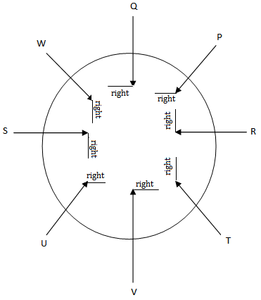

Which one is immediate right to the V if the position of S and U are interchanged ?.
Answer - C
Explanation -

Person at immediate right of Vis T
In a certain language, MANGO is written as PXQDR and APPLE is written as DMSIH. How is PROTEIN written in this language?
Explanation:
MANGO -> PXQDR
M +3 = P, A -3 = X, N + 3 = Q, G – 3 = D and so on
The pattern is +3, -3, +3 and so on.
Therefore, the correct answer is Option B
Pointing to a woman, a man said, "she is the daughter of my wife's daughter". How is the man related to this woman?
Explanation:
Man -> Wife -> Daughter -> Daughter
Therefore, the correct answer is Option D
Arun is facing towards the North and turns through 45° clockwise, again 180° clockwise and then turns through 270° anti-clockwise.
In which direction is he facing now?
Explanation:
In starting Arun is facing towards the north. After turning 45 degrees clockwise, he is facing North – East. Now, turning 180 degrees clockwise, he is facing South –West. Again turning by 270 degrees anti-clockwise, he is facing North – West
Therefore, the correct answer is Option C
Arun’s and Varun’s savings per month are in the proportion of 2:5 respectively.
What is Varun's savings?
I.Arun saves 30% of his salary.
II. Salary of Arun is Rs. 15000
Explanation:
The ratio of Savings of Arun and Varun = 2:5
Salary of Arun = 15000, Savings = .3 x 15000 = 4500
Let suppose total savings of Arun and Varun = X. Therefore, 2X/7 = 4500 => X= 15750
So, savings of Varun = X – 4500 = 15750 – 4500 = 11250
Correct answer is Option A
In what proportion would 3 sons Amar, AKbar and Anthony divide the money given by their dad for the party?
I. Amar takes two – firth of the total money
II. Akbar takes one – third of the remaining money
Explanation:
From only statement I, the share of amar can be found out only, and from only statement II, we cannot get any information. So, to get the answer, we need both the statements together.
Therefore, the correct answer is Option D
Arrange the following given words to make a meaningful sequence
1. Lecture
2. Earn
3. College
4. Job
5. Examination
Explanation:
Correct sequence is College -> Lecture -> Examination -> Job -> Earn
Therefore, the correct answer is Option D
Find out the number to replace the question mark 2, 12, 120, 1680, 30240, ?
Explanation:
1st term = 2 x 1 = 2
2nd term = (First term x 2) x 3, 3rd term = (Second term x 2) x 5
Concept here is that, double the last term and multiply it with next odd number
Therefore, Last term is (30240 x 2) x 11 = 665280
The correct answer is Option B
If BLACK is coded as DNCEM, then ORANGE is coded as:
Answer - A
If FEATURES is written as GCDPZLLK in a code, what will be the fourth letter from the left, if ADVANTAGE is written in that code?
Answer - C
In Certain code, FEAT is written as GCDP, what's going to be the 3rd letter from the left, if ADVANCE is written in that code?
Answer - C
Explanation
F E A T
1 -2 3 -4
G C D P
A D V A N C E
1 -2 3 -4 5 -6 7
T
Based on the detail given below. There is a pattern that defines the connection between the first -element. Determine this courting after which perceive the missing detail of the second one pair, such that both the pairs are analogous.
QDXM:SFYM::EIOZ :
Answer - D
Explanation
Q D X M
2 2 1 1
S F Y N
E I O Z
2 2 1 1
G K P A
According to the wide variety series given below. Identify the connection among the numbers and find the missing quantity. 11, 12, 16, 25, 41, 66, ___
Answer - B
Explanation
11 12 16 25 41 66 ___
1*1 2*2 3*3 4*4 5*5 6*6
In the underneath query, there are two statements I and II. Find out if the facts given within the announcement(s) is enough to answer the question or no longer.
Question:
Is Biswajit taller than Sumith?
Statement I. Rahul is of the same peak as Bswajit and Sumit
Statement II. Sumit is shorte than Rahul
Answer - A
Four alternatives are given underneath. Three of those options are similar to every other due to the fact they observe the equal sample.
Identify the choice that is special from the opposite three.
Answer - C
Explanation
A+E=6
1 5
F+D=10
6 4
A+D != 6
1 4
Look at this series: 36, 34, 30, 28, 24, … What number should come next?
Answer - A. This is an alternating number of subtraction series. First, 2 is subtracted, then 4, then 2, and so on.
Look at this series: 7, 10, 8, 11, 9, 12, … What number should come next?
Answer - C. Its an alternating addition and subtraction series. 3 is added in the first pattern, and then 2 is subtracted.
Look at this series: 2, 1, (1/2), (1/4), … What number should come next?
Answer - B. It’s a division series. Every number is half of the previous number. The number is divided by 2 successively to get the next result. 4/2 = 2. 2/2 = 1. 1/2 = ½. (1/2)/2 = ¼. (1/4)/2 = 1/8 and so on.
Look at this series: 80, 10, 70, 15, 60, … What number should come next?
Answer - A. This is an alternating addition and subtraction series. In the first pattern, 10 is subtracted from each number to arrive at the next. In the second, 5 is added to each number to arrive at the next.
Statements: Applications of applicants who do no fulfil eligibility criteria and/or who do not submit applications before last date will be summarily rejected and will not be called for the written test.
Conclusions:
I. Those who are called for the written test are those who fulfil eligibility criteria and have submitted their applications before last date.
II. Written test will be held only after scrutiny of applications.
Answer - D
Explanation - The statement clearly mentions that fulfilling the eligibility criteria and submitting the application before the stipulated date are both essential to avoid rejection. So, I follows. Also, since it is given that the candidates whose applications are rejected shall not be called for written test, so II also follows.